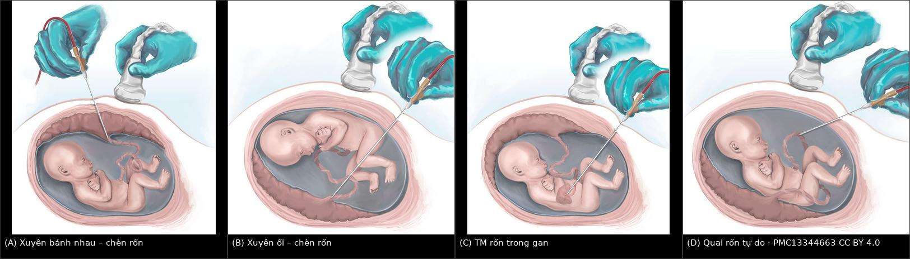
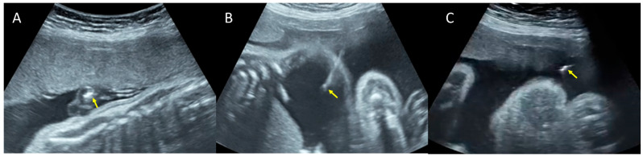

1989 — Chọc dò cuống rốn (cordocentesis): chọn chỗ chọc, biến chứng và theo dõi sau thủ thuật / Fetal blood sampling by cordocentesis
Tags: pattern:bien-chung-thu-thuat pattern:chay-mau-day-ron pattern:nhip-cham-thai vung:thai-nhi vung:day-ron vung:tinh-mach-ron protocol:choc-day-ron protocol:IHUV
Mức chắc chắn (certainty): tổng hợp y văn (literature synthesis) — số liệu từ 1.806 lần chọc dò cuống rốn ở 3 trung tâm (PMC10647806), 388 lần truyền máu trong tử cung có theo dõi thời gian chảy máu sau chọc (PMC10931764), tổng quan quản lý bất đồng nhóm máu 2025 (PMC13344805), kỹ thuật chọn đường vào (PMC13344663) và một ca nguyên văn có ảnh kim (PMC9697820). Phần truyền máu – thể tích – ngưỡng truyền lại đã có bài riêng 1673; bài này chỉ giữ phần thủ thuật chẩn đoán.
Câu chốt: chọc dò cuống rốn là thủ thuật vào thẳng tuần hoàn thai — biến chứng đến trong vài giây đến vài giờ, không phải vài ngày như chọc ối. Ba con số để nhớ: chảy máu từ chỗ chọc 20–32%, xuất huyết thai–mẹ tới 40%, nhịp chậm 5–10%; ở loạt 1.806 ca hiện đại, biến chứng trong 48 giờ chỉ 1,6% nhưng chọc trước 17 tuần biến chứng tới 20% (2/10). Chọn đúng chỗ chọc (chỗ chèn dây rốn, tĩnh mạch rốn, tránh động mạch) quan trọng hơn mọi thứ khác.
1. Tổng quan bệnh học – cơ chế hình ảnh (TẠI SAO)
1.1 Chọc dò cuống rốn để làm gì
- Lấy máu thai trực tiếp để: karyotype nhanh (24–72 giờ, khi dị tật trên siêu âm cần kết quả gấp), chẩn đoán nhiễm trùng bào thai (IgM, PCR CMV/toxoplasma/parvovirus), đếm tiểu cầu trước thủ thuật, khí máu/thể tích hồng cầu khi nghi thiếu máu, và điều trị tại chỗ (truyền máu, truyền tiểu cầu, thuốc chống loạn nhịp).
- Trong loạt 1.806 ca (1998–2019): chỉ định hay gặp nhất là dị tật thai/nghi bất thường nhiễm sắc thể 75,1%, sau đó bất thường di truyền đã biết 3,9%, nghi nhiễm trùng 3,3%, chậm tăng trưởng (IUGR) 3,3%, phù thai 3,2%, nghi thiếu máu 3,0%, xuất huyết nội sọ thai 1,3% (PMC10647806). Ngày nay phần lớn các chỉ định này đã được chọc ối/CVS + CMA thay thế; cordocentesis còn lại chủ yếu cho thiếu máu, nhiễm trùng và điều trị.
1.2 TẠI SAO biến chứng nặng hơn chọc ối — giải phẫu và vật lý
- Thành mạch rốn có cơ trơn dày. Tĩnh mạch rốn dễ chọc, dòng chảy liên tục; động mạch rốn có lớp cơ dày, chọc vào dễ co thắt mạch (vasospasm) → nhịp chậm và giảm tưới máu bánh nhau. Chọc nhầm động mạch làm tăng 10,8 lần biến chứng chu phẫu không tử vong (KTC 3,5–33,6) (PMC13344663).
- Lỗ chọc nằm trong mạch đang chịu áp lực thai. Rút kim → máu chảy từ lỗ vào nước ối, có thể không thấy trên siêu âm vì máu tan nhanh trong dịch ối. Vì vậy phải đo thời gian chảy máu tại chỗ bằng Doppler màu, không chỉ "nhìn thấy khô".
- Xuất huyết thai–mẹ (fetomaternal hemorrhage, FMH) xảy ra khi đầu kim xuyên qua bánh nhau hoặc chọc lại nhiều lần; nguy cơ tới 40%, tăng rõ khi bánh nhau thành trước, thủ thuật > 3 phút, ≥ 2 lần chọc (PMC10647806). Hệ quả: thiếu máu thai cấp và, ở mẹ Rh âm, tạo kháng thể anti-D (bài 1747).
- Nhiễm khuẩn đi theo đường kim vào tuần hoàn thai — tỷ lệ ~1%, nhưng khi xảy ra là nhiễm trùng huyết thai/mẹ, không phải "viêm nhẹ".
- Tỷ lệ lấy được máu thai thất bại 5–10%: kim tuột khỏi lòng mạch khi thai cử động, dây rốn trượt, hoặc mẫu lẫn dịch ối — lặp lại nhiều lần làm tăng FMH và chảy máu, nên giới hạn số lần chọc.
1.3 Ngưỡng định lượng — bảng số phải thuộc
| Biến chứng | Tỷ lệ | Chi tiết / yếu tố nguy cơ | Nguồn |
|---|---|---|---|
| Chảy máu từ chỗ chọc | 20–32% | liên quan mất thai; đo bằng Doppler màu tại chỗ | PMC10647806 |
| Xuất huyết thai–mẹ | tới 40% | bánh nhau thành trước, > 3 phút, ≥ 2 lần chọc | PMC10647806 |
| Nhịp chậm thai | 5–10% | thường thoáng qua; tăng khi chọc động mạch rốn | PMC10647806 |
| Nhiễm trùng | ~1% | sốt, đau tử cung, dịch ối hôi | PMC10647806 |
| Không lấy được máu thai | 5–10% | thai cử động, dây rốn trượt, lẫn dịch ối | PMC10647806 |
| Mất thai do thủ thuật | 0,6–1,9% | loạt 1.806 ca: 1,6% biến chứng < 48 giờ; IUFD 0,6% | PMC10647806 |
| Mất thai toàn bộ (mọi nguyên nhân) | 4,8% (87/1.806) | 57,5% có dị tật/hội chứng, 26,4% bất thường NST, 14,9% phù thai | PMC10647806 |
| Chọc < 17 tuần | 20% (2/10) vs 1,4% (26/1.796) | p = 0,02 — tránh chọc quá sớm | PMC10647806 |
| Chảy máu sau chọc > 120 giây | tử vong sơ sinh 45,8% | ở loạt 388 lần truyền máu — dấu hiệu tiên lượng xấu | PMC10931764 |
- Ngưỡng điều trị (khi máu thai đã lấy được): Hct < 30%** hoặc **Hb thấp hơn trung vị > 2 SD → truyền máu trong tử cung; đích sau truyền Hb 14–16 g/dL hoặc Hct 40–45%; MCA-PSV ≥ 1,5 MoM có độ nhạy 86%, độ đặc hiệu 71%, dương tính giả ~12% — nên cordocentesis là bước xác nhận, không phải bước sàng lọc (PMC13344805). Kỹ thuật truyền, thể tích và ngưỡng truyền lại: bài 1673.
2. Mẫu hình + chẩn đoán phân biệt theo vị trí (gamut)
Mẫu hình cần nhận diện: "sau khi rút kim, thai làm sao?" — gamut chia theo thời điểm và vị trí chọc.
- Tại chỗ, ngay sau rút kim:
- Chảy máu từ lỗ chọc (20–32%) — tia máu/đám hồi âm trong nước ối cạnh dây rốn; tự cầm sau 30–60 giây ở đa số.
- Tụ máu dây rốn (cord hematoma) — khối hồi âm trong Wharton's jelly, có thể chèn ép lòng mạch → nhịp chậm.
- Nhịp chậm (5–10%) — do co thắt động mạch, chèn ép dây rốn, hoặc phản xạ phế vị; thường hồi phục < 3 phút.
- Trong 48 giờ:
- Thai lưu (0,6% trong loạt lớn), co tử cung (0,4%), bong màng ối (chorioamniotic separation, 0,1%), chọc không thành công (0,2%) (PMC10647806).
- Muộn (ngày–tuần):
- Nhiễm trùng ối/thai (~1%), rò ối/PPROM, thiếu máu do FMH, tạo kháng thể anti-D ở mẹ Rh âm.
- Theo vị trí chọc — gamut quyết định biến chứng:
- Chỗ chèn dây rốn vào bánh nhau (placental cord insertion) — dùng 76,9%; dây rốn cố định, dễ chọc, nhưng xuyên bánh nhau 52,1% → FMH cao hơn.
- Quai dây rốn tự do (free loop) — 15,2%; không xuyên bánh nhau nhưng dây di động, khó giữ kim.
- Chỗ chèn vào bụng thai (fetal cord insertion) — 1,5%; gần thai, nguy cơ chấn thương thai.
- Tĩnh mạch rốn trong gan (IHUV) — đường thay thế khi bánh nhau thành trước hoặc không tiếp cận được dây rốn; ít FMH hơn, nhưng kim qua nhu mô gan.
3. Bảng so sánh phân biệt (ma trận đối chiếu)
| Đường vào (approach) | Hình ảnh / kỹ thuật điển hình | Chốt vào (rule-in) | Chốt loại (rule-out) | Gợi ý xác nhận |
|---|---|---|---|---|
| Chỗ chèn dây rốn – xuyên bánh nhau | Kim đi qua bánh nhau rồi vào tĩnh mạch rốn; dùng 76,9% ca | Bánh nhau thành trước, dây rốn cố định, đường kim ngắn | Bánh nhau thành sau hoặc dây rốn sau thai → khó và nguy hiểm hơn | Doppler màu xác định tĩnh mạch (dòng liên tục), tránh động mạch |
| Chỗ chèn dây rốn – xuyên ối | Kim qua buồng ối tới dây rốn; không xuyên bánh nhau | Bánh nhau thành sau, buồng ối trước dây rốn | Bánh nhau thành trước che đường đi → chọn xuyên bánh nhau | Đo thời gian chảy máu sau rút kim; theo dõi tim thai liên tục |
| Quai dây rốn tự do | Dây rốn trôi trong ối, không cố định; dùng 15,2% | Dây rốn xa bánh nhau, tiếp cận dễ, tránh FMH | Thai cử động mạnh, dây ngắn/trượt → thất bại và chọc lại | Cố định nhẹ bằng tay lên bụng; một lần chọc, không rượt kim |
| Tĩnh mạch rốn trong gan (IHUV) | Kim xuyên nhu mô gan vào đoạn trong gan của tĩnh mạch rốn | Bánh nhau thành trước; dây rốn không tiếp cận; cần ít FMH | Nghi bất thường gan/thai nhỏ; không dùng khi cần mẫu mô gan | Doppler gan; không chọc vào động mạch; theo dõi chảy máu |
| Chọc nhầm động mạch rốn (biến thể tai nạn) | Máu phun theo nhịp, màu đỏ tươi, co thắt ngay | Dòng phổ đập trên Doppler; nhịp chậm ngay sau khi hút | Dòng liên tục, máu sẫm → tĩnh mạch | Rút kim ngay, thôi hút, theo dõi tim thai; không cố lấy thêm |
- Ảnh ghép 4 đường vào — dùng để chọn đường trước khi chọc (A xuyên bánh nhau, B xuyên ối, C tĩnh mạch rốn trong gan, D quai tự do):

Ảnh minh họa giải phẫu, ghép letterbox từ 4 hình gốc — nguồn PMC13344663, CC BY 4.0 (không crop, không kéo giãn).
4. Protocol thủ thuật + theo dõi
4.1 Chỉ định phải "đáng" — luôn hỏi có cách ít xâm lấn hơn không
- Karyotype/CMA: ưu tiên chọc ối hoặc CVS (bài 1954, 1988); cordocentesis chỉ khi cần kết quả trong 24–72 giờ hoặc không thể lấy ối/gai.
- Thiếu máu thai: dùng MCA-PSV làm sàng lọc; chỉ chọc khi MCA-PSV ≥ 1,5 MoM hoặc có dấu hiệu thiếu máu, vì dương tính giả ~12% (PMC13344805). Không chọc "để chắc" khi MCA-PSV bình thường.
- Nhiễm trùng bào thai: cordocentesis khi huyết thanh mẹ không kết luận và cần IgM/PCR máu thai.
4.2 Trước – trong – sau thủ thuật
- Trước: siêu âm xác định vị trí bánh nhau, dây rốn, thai; đo MCA-PSV nếu nghi thiếu máu; đếm tiểu cầu mẹ; giải thích nguy cơ; consent; đánh dấu trái/phải nếu song thai.
- Trong: kim 20–22 G dưới hướng dẫn siêu âm liên tục; vào tĩnh mạch rốn (dòng liên tục trên Doppler màu), tránh động mạch; khi cần truyền máu, làm liệt thai bằng rocuronium và giữ nguyên kim để truyền (kỹ thuật: bài 1673); tối đa 2–3 lần chọc, mỗi lần < 3 phút (yếu tố nguy cơ FMH).
- Sau:
- Đo thời gian chảy máu tại chỗ bằng Doppler màu; > 120 giây là dấu hiệu xấu (tử vong sơ sinh 45,8% trong loạt truyền máu — PMC10931764) → theo dõi sát, cân nhắc can thiệp.
- Đánh giá tim thai ngay và theo dõi 30–60 phút; nhịp chậm > 3 phút hoặc nhịp chậm kèm mất dao động → xử trí cấp cứu.
- Anti-D nếu mẹ Rh âm (bài 1747).
- Hẹn 1–2 tuần lặp MCA-PSV nếu không truyền máu; nếu đã truyền, theo dõi theo bài 1673.
4.3 Flowchart quyết định
flowchart TD
A[Nghi thiếu máu thai] --> B[MCA-PSV]
B -->|Duoi 1,5 MoM| C[Theo doi lai 1-2 tuan]
B -->|Tu 1,5 MoM tro len| D[Choc do cuong ron xac nhan]
D --> E{Hct mau thai}
E -->|Duoi 30%| F[Truyen mau trong tu cung - bai 1673]
E -->|Tu 30% tro len| G[Khong truyen; lap MCA-PSV 1-2 tuan]
D --> H{Bien chung sau choc}
H -->|Chay mau tren 120 giay| I[Theo doi sat, danh gia can thiep]
H -->|Nhip cham tren 3 phut| J[Xu tri cap cuu]
5. Biến thể bình thường và cạm bẫy
- Chảy máu ít sau chọc là bình thường: đa số tự cầm trong 30–60 giây; chỉ kéo dài > 120 giây mới là dấu hiệu xấu. Đừng hoảng khi thấy "vệt hồi âm" trong ối — nhưng đừng bỏ qua khi máu tiếp tục chảy.
- Nhịp chậm thoáng qua ≠ thai lưu: 5–10% ca có nhịp chậm, phần lớn hồi phục; xử trí là ngừng kích thích, nghiêng tử cung, oxy mẹ, không phải mổ lấy thai ngay.
- Nhầm động mạch – tĩnh mạch: động mạch đập theo nhịp, tĩnh mạch liên tục; hút vào động mạch gây co thắt và mẫu sai (khí máu, pH khác). Luôn bật Doppler màu trước khi hút.
- Mẫu lẫn dịch ối: làm Hct/Hb thấp giả; nếu kết quả không khớp lâm sàng, lấy lại thay vì truyền máu theo số sai.
- Thai cử động: đuổi theo dây rốn làm tăng số lần chọc và FMH; dùng bàn tay ấn nhẹ cố định hoặc chờ thai yên.
- Chọc quá sớm: < 17 tuần có biến chứng 20% (2/10) — trì hoãn đến khi thai lớn hơn nếu không cấp cứu.
- Song thai: chọc một túi có thể không đại diện thai kia; ghi rõ mẫu nào của thai nào (bài 1988).
6. Tự lượng giá — Blind Quiz
Ca 1 — Thai có dịch bụng, siêu âm can thiệp

- Gợi ý lâm sàng: thai có dịch bụng nặng, cần lấy máu thai và giảm dịch.
- Câu hỏi: (a) Ba ảnh A–B–C là ba thủ thuật gì? (b) Mũi tên vàng chỉ gì? (c) Vì sao thủ thuật ở A nguy hiểm hơn B và C?
Bấm để hiện đáp án (findings + chẩn đoán)
- Findings: mũi tên vàng chỉ đầu kim (tăng hồi âm) trong từng thủ thuật: (A) chọc dò cuống rốn (cordocentesis) — đầu kim trong dây rốn; (B) chọc hút dịch bụng (paracentesis); (C) chọc ối (amniocentesis).
- Chẩn đoán: ba đường lấy mẫu/điều trị ở thai có dịch bụng; ca nguyên văn dùng để chẩn đoán nguyên nhân (nhiễm trùng bào thai).
- Vì sao A nguy hiểm hơn: A vào tuần hoàn thai → chảy máu, nhịp chậm, FMH, nhiễm trùng huyết thai; B/C chỉ vào khoang dịch, biến chứng chủ yếu là rò ối/nhiễm tại chỗ.
- Nguồn ảnh: Pathogens 2022 — PMC9697820 — Figure 3 — CC BY 4.0.
Ca 2 — Chọn đường vào ở thai có bánh nhau thành trước
- Gợi ý lâm sàng: cần truyền máu trong tử cung; bánh nhau thành trước, dây rốn sau thai.
- Câu hỏi: (a) Xếp tên 4 đường vào. (b) Đường nào ít FMH nhất? (c) Khi nào chọn đường C?
Bấm để hiện đáp án (findings + chẩn đoán)
- Findings: (A) kim xuyên bánh nhau tới chỗ chèn dây rốn ở bánh nhau thành trước; (B) kim xuyên ối tới chỗ chèn dây rốn khi bánh nhau thành sau; (C) kim vào tĩnh mạch rốn trong gan (IHUV); (D) kim vào quai dây rốn tự do.
- Chẩn đoán: lựa chọn đường vào theo vị trí bánh nhau và dây rốn, không theo thói quen.
- Ít FMH nhất: đường C (IHUV) và D (quai tự do) — không xuyên bánh nhau; A có FMH tới 40% khi bánh nhau thành trước, thủ thuật dài, chọc lại.
- Khi chọn C: bánh nhau thành trước hoặc dây rốn không tiếp cận được; đổi lại kim qua nhu mô gan.
- Nguồn ảnh: Pregnancy 2025 — PMC13344663 — CC BY 4.0; ảnh ghép letterbox từ 4 hình gốc, không crop.
Bài liên quan chéo
- 1954 – Chọc ối & sinh thiết gai nhau: biến chứng và anti-D
- 1988 – Chọc ối & sinh thiết gai nhau ở song thai
- 1673 – Truyền máu trong tử cung qua tĩnh mạch rốn
- 1747 – Xuất huyết thai–mẹ (FMH)
- 500 – Tổng quan Vú & Sản phụ khoa
Ảnh
images/1989_choc-day-ron_SieuAm_PMC9697820.jpg— đầu kim trong cordocentesis/paracentesis/amniocentesis — Pathogens 2022 — PMC9697820 — CC BY 4.0.images/composite_duong-vao.jpg— 4 đường vào cuống rốn — PMC13344663 — CC BY 4.0 (composite letterbox).- Chi tiết nguồn + giấy phép từng ảnh:
images/CREDITS.md.
Không dùng để chẩn đoán độc lập khi chưa có người hướng dẫn.